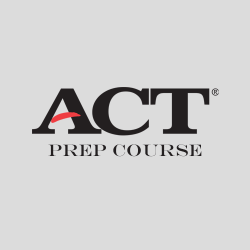

What is IELTS?
The International English Language Testing System (IELTS) assesses the English language proficiency of people who want to study or work where English is used as the language of communication.

Why choose IELTS?
IELTS tests all four language skills - listening, reading, writing and speaking. The IELTS Speaking test is a face-to-face interview with a certified Examiner.
Test format
IELTS test takers can choose between two versions of the test - Academic or General Training - depending on their academic or professional aims, or visa requirements.
Academic or General Training
IELTS Academic measures the English language proficiency needed for an academic, higher education environment. IELTS General Training measures English language proficiency in a practical, everyday context.
ACT PREP COURSE
 ACT Prep Course
For students from grade 11 to 12.
This intensive course aims to help students achieve higher scores on the ACT.
The course will focus on improving reading and writing capabilities while teaching the student exam
skills and strategies through analysis and explanation
of the mock exams' practice.
 Improve students' language ability.
Improve students' language ability.
Teach students exam skills and strategies.
Familiarize students with the exam format.
COURSE SCHEDULE
2017 Feb - 2017 Jun
| Time | Mon | Tue | Wed | Thr | Fri |
|---|---|---|---|---|---|
| 4:00PM - 6:00PM | English Reading |
Science | English Reading |
Science | English Reading |
| 6:30PM - 8:30PM | WRITING ACT VOCA |
MATH | WRITING ACT VOCA |
MATH | WRITING ACT VOCA |
|
WEEKEND COURSE 10:00AM-12:00PM | 1:00PM-3:00PM | 3:00PM-5:00PM |
|||||
About toefl (Test of English as a Foreign Language)
TOEFL is a standardized test to measure the English language ability of non-native speakers wishing to enroll in English-speaking universities. The test is accepted by many English-speaking academic and professional institutions. TOEFL is one of the two major English-language tests in the world, the other being the IELTS.
New SAT Weekend Course - Saturday
| TIME | ACTIVITY |
|---|---|
| 7:45AM - 8:00AM | Arrival |
| 8:00AM - 9:00AM | Utensil check, seating arrangement, instructions |
9:00AM - 10:05AM |
Reading Test |
| 10:05AM - 10:40AM | Writing and Language Test |
| 10:40AM - 10:45AM | Break Time |
| 10:45AM - 11:10AM | Math Test - No Calculator |
| 11:10AM - 12:05PM | Math Test - Calculator |
| 12:05PM - 12:10PM | Break Time |
12:10PM - 1:00PM |
Essay |
|
1:00PM - 3:00PM |
Lunch Break |
| 3:00PM - 3:30PM | Self-Correction (Teacher Reads Essay) |
| 3:30PM - 4:00PM | Essay Critique and Revision |
| 4:00PM - 5:00PM | Teacher Aided Correction - Reading Test |
| 5:00PM - 6:00PM | Teacher Aided Correction - Writing and Language Test |
| 6:00PM - 7:00PM | Teacher Aided Correction - Math Test - No Calculator |
| 7:00PM - 8:00PM | Teacher Aided Correction - Math Test - Calculator |
ESL (English as a Second Language) COURSE
ESL Composition II
ESL Canadian Studies
ESL Skills
For Students who take the relevant ESL/EAL courses in the school or to prepare the course in the next semester.
This course is to support the students with relevant assignments from their school ESL(EAL)
course.
According to the needs and the requests by the students, teachers are helping the students to
complete
the homework and
to prepare for upcoming tests and exams. In order to be cost efficient, the
course
covers basic
English skills, such as grammar and vocabulary for the students to be better in regular school
English
courses.
It is a small group class, 1~2 hours per class, 2~4 classes a week.
English Basic Skills
For ESL(EAL) Beginner Level students
This course is a stepping stone into the world of English.
It covers all the required basic skills toward Academic English such as
grammar, vocabulary, writing, reading comprehension, speaking and listening.
It is a small group class, 1~2 hours per class, 2~4 classes a week.
COURSE SCHEDULE
2017 Feb - 2017 Jun
| Time | Mon | Tue | Wed | Thr | Fri |
|---|---|---|---|---|---|
| 4:00PM - 6:00PM | ESL Skills |
ESL Canadian Studies |
ESL Canadian Studies |
||
| 6:00PM - 7:30PM | English Basic Skills |
ESL Composition II |
English Basic Skills |
ESL Composition II |
- Saturday
- 11:00AM - 12:30AM : ESL Composition II
Academic Essay Writing Course
Academic Essay Writing I
For students from grade 11 to 12.
This course is designed to prepare for English 12 Provincial Examination and school English 12
course, while focusing on Synthesis and Academic Essays, which are required for ENG 12
Provincial
Exam.
It is a group class, two hours per class, twice a week, four hours per week.
Academic Essay Writing II
For students from grade 9 to 10.
This course is aimed at enriching writing skills, with focus on the four types of Basic Academic
Writing: Informative, Expository, Narrative, Persuasive.
Students will also learn how to write Comparative Analysis Essays, by comparing and contrasting
two
different passages as part of the English 10 curriculum.
It is a group class, two hours per class, twice a week, four hours per week.
Academic Essay Writing III
For Students from grade 7 to 9.
This course is to master basic writing skills, such as paragraph writing, with focus on the
introduction of the four types of Academic Writing: Informative, Expository,
Narrative, Persuasive.
It is a group class, two hours per class, twice a week, four hours per week.
Academic Essay Writing IV
For Students from grade 5 to 7.
This course is an introduction to writing.
Students learn how to write a variety of
paragraphs,
such
as
book reports, newspaper articles, letters, poetry analysis, etc.
It is a group class, 1.5 hours per
class, twice a week, four hours per week.
COURSE SCHEDULE
2017 Feb - 2017 Jun
| Time | Mon | Tue | Wed | Thr | Fri |
|---|---|---|---|---|---|
| 4:00PM - 6:00PM | Academic Essay Writing II |
Academic Essay Writing III |
Academic Essay Writing II |
Academic Essay Writing III |
Academic Essay Writing I |
| 6:00PM - 7:30PM | Academic Essay Writing IV |
Academic Essay Writing IV |
- Saturday
- 9:00AM - 11:00AM: Academic Essay Writing I
Literature Course
Senior
Novel Study
For students from grade 9 to 12.
This course is designed to enrich reading skills in terms of analytical and critical reading focusing on the high school English material. It aims to inspire teenagers to keep their general interest in reading novels and let them have a perspective on various literary works. It is a group class, two hours per class, once a week.
Senior Literature Study I :
Short Stories & Poetry
For students from grade 9 to 12.
This course is designed to introduce the relatively unfamiliar genres such as short stories and poetry to high school students. It aims to guide the students on how to read and understand short stories and poetry assigned in high school English classes. It is a group class, two hours per class, once a week.
Senior Literature Study II :
Shakespeare
For students from grade 9 to 12.
This course is designed to provide an attractive way to study the classical pieces of English Literature, with special focus on Shakespeare's plays. It is meant to encourage the students to feel connected with Old English. It is a group class, two hours per class, once a week.
Junior Novel Study I : Fiction
For students from grade 5 to 8.
This course is to accelerate the reading ability for the junior students focusing on popular novels recommended by English teachers and Librarians. It is a group class, 1.5 hours per class, once a week. The class has a goal to complete a book a month (4 weekly classes).
Junior Novel Study II : Non- Fiction
For students from grade 5 to 8.
This course is designed to arouse the student's curiosity and interest in human history and what is going on in the world and nature based on awarded novels recommended by middle schools. It is a group class, two hours per class, once a week. The class has a goal to complete a book within a given period (4~6 classes).
COURSE SCHEDULE
2017 Feb - 2017 Jun
| Time | Mon | Tue | Wed | Thr | Fri |
|---|---|---|---|---|---|
| 4:00PM - 6:00PM | Senior Novel Study (B) |
Senior Novel Study (C) |
|||
| 6:00PM - 7:30PM | Junior Novel Study I Fiction(A) |
Junior Novel Study I Fiction(B) |
|||
| 7:30PM - 9:30PM | Senior Literature Study I : Short Stories & Poetry |
Senior Literature Study II : Shakespeare |
- Saturday
- 9:00AM - 11:00AM : Junior Novel Study II: Non-Fiction (A)
- 11:00AM - 1:00PM : Senior Novel Study (A)
- 11:00AM - 1:00PM : Junior Novel Study II : Non-Fiction (B)
Social Study / Junior World History Course
Socials Studies 9 ~ 11
For Students who take the relevant Socials courses in the school or to prepare the course in the next semester
This course is to support the school Social courses from grades 9 to 11. According to the current secondary school graduation requirements, the students are requested to take Socials 11, while Socials 9 and 10 are prerequisites to Socials 11. This class aims to help the students complete their homework and prepare for the upcoming tests and exams. It is a group class, 2 hours per class, 1~2 classes a week.
Junior World History
For students from grade 5 to 8.
This course is an eye opening course of world history for the juniors who are interested in
history.
It
covers a variety of subjects from the ancient civilization to the current events, step by step.
The
purpose of this course is to provide knowledge about major and meaningful events in human
history
and
let the students be amused by the humanities and the world. It is a group class, 1.5 hours per
class,
once a week.
COURSE SCHEDULE
2017 Feb - 2017 Jun
| Time | Mon | Tue | Wed | Thr | Fri |
|---|---|---|---|---|---|
| 6:00PM - 7:30PM | Social Studies 10 | Juniors World History |
|||
| 7:30PM - 9:30PM | Social Studies 11 |
- Saturday
- 1:00PM - 2:30PM : Social Studies 9
 (604) 674-5858
(604) 674-5858 (778) 316-6561
(778) 316-6561 (778) 895-2101
(778) 895-2101